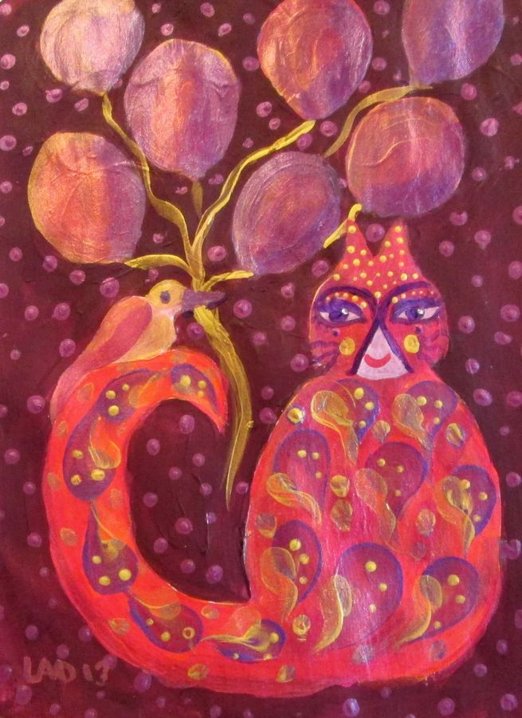
The art collections · 06
Cats
A little mischief. A lot of personality. The cats that helped begin a painting adventure. Snowmen with points on their heads? Perhaps.
A note about this collection
Our Journey into the World of Painting
Upon our retirement, we made the decision to embark on a journey into the world of painting, starting with the One Stroke painting technique, popularized by Donna Dewberry. Initially, this method served as a foundational stepping stone, igniting our passion for artistic expression. However, within a month, we found ourselves yearning to broaden our artistic horizons. Despite facing initial challenges due to a perceived lack of innate talent, we did not allow this sentiment to deter us. The turning point came following a conversation with a family member who humorously suggested that we focus on painting cats, likening them to "snowmen with points on their heads." This whimsical advice marked the beginning of our dedicated pursuit of art, propelling us into what would become a fulfilling artistic career. Meow.
11 of 11 artworks
Select an image for a closer look. Download the original to keep.


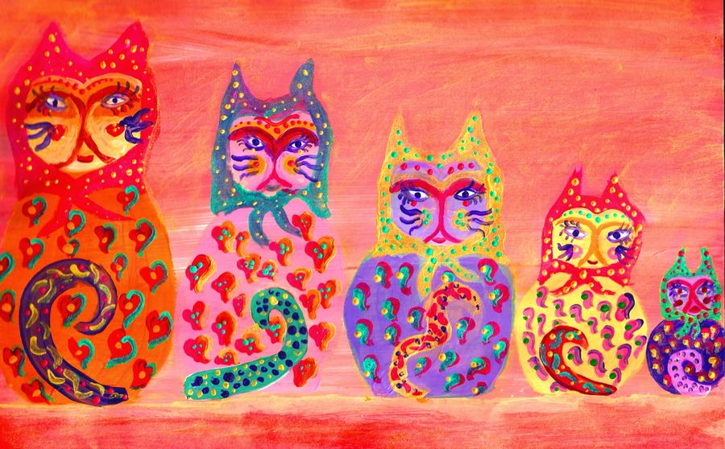


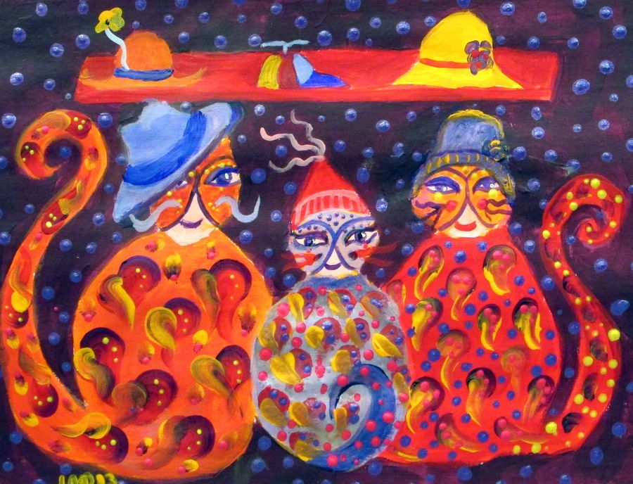


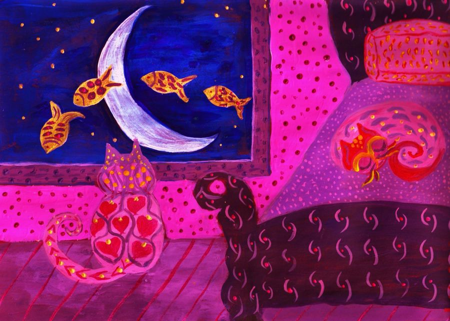


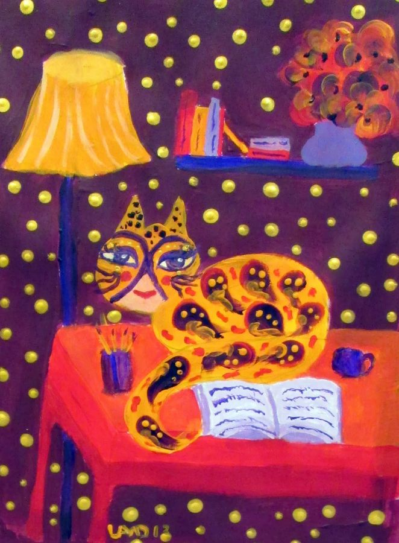


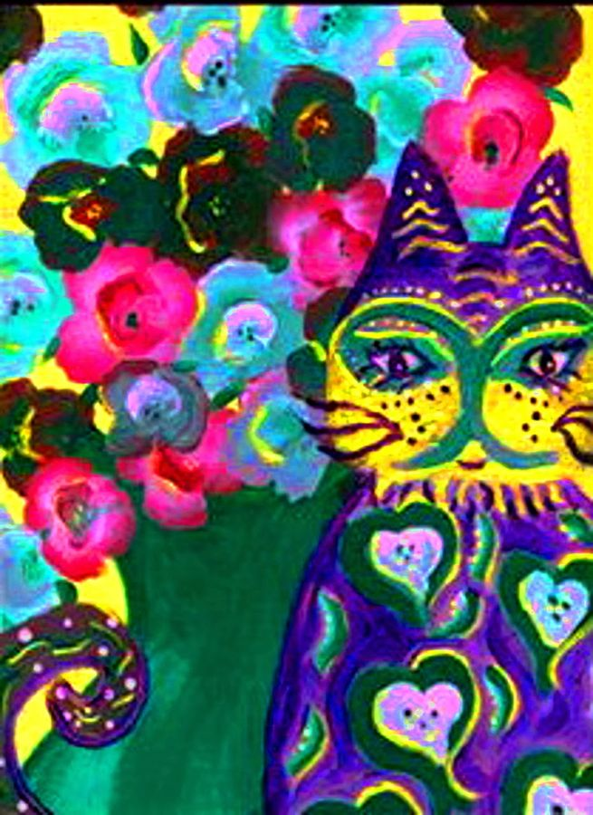


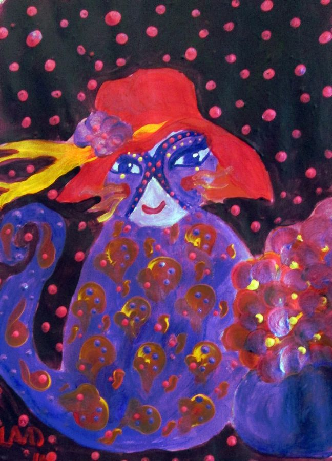


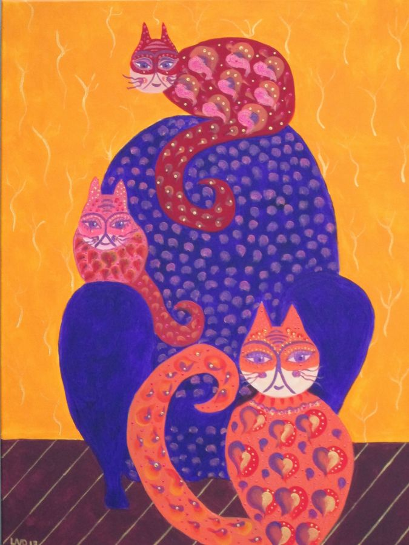


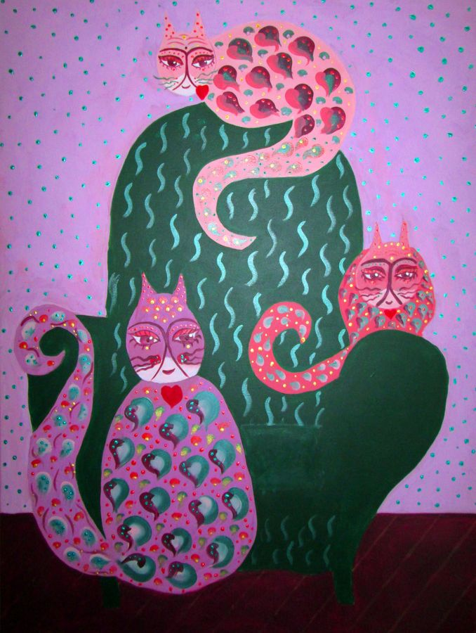


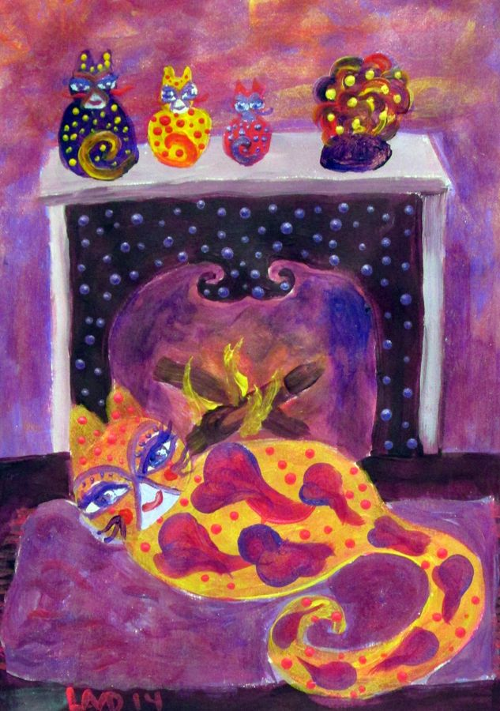


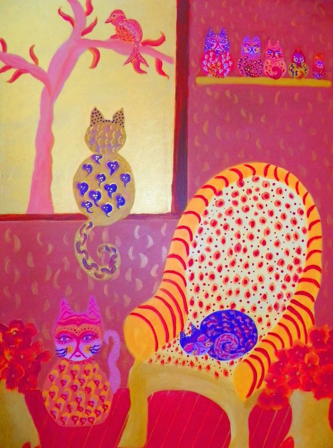

No artworks match that title. Try another search.
These digital images are free for personal, non-commercial use. For other uses or questions, get in touch.
Next collection: Crossing Thresholds →